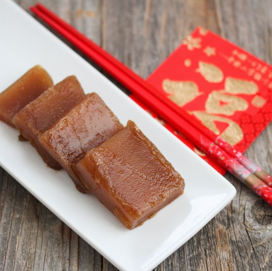

Welcome to Chinese New Year Recipes
Learn to make two dishes to celebrate the Chinese New Year.
Click on the image to watch a video of the dish being made.
Nian Gao (Chinese New Year Cake)
Ingredients
- 1 lb. bag of glutinous rice flour (Erawan Brand look for the green bag)
- 1 1/4 cups brown sugar
- 2 Tbsp oil
- 2 1/4 cups filtered water
Steamed Fish in Soya Sauce and Ginger

Ingredients
- 1 whole white fish
- 1 bunch spring onions
- 1 bunch coriander
- 1 large piece of ginger
- 3 Tbsp. canola oil
- 1/4 cup Pearl River Bridge Seasoned Soy Sauce for Seafood
- 1 tsp cane sugar